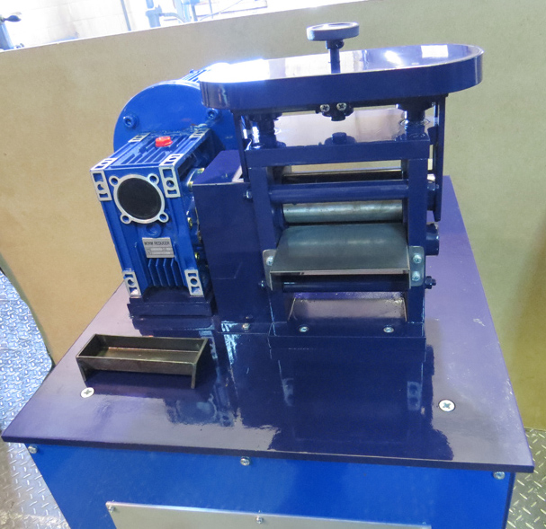

<ons-page>
  <ons-toolbar modifier="opacity">
    <div class="left">
      <ons-toolbar-button ng-click="menu.toggle()"><ons-icon icon="ion-navicon-round" fixed-width="false"></ons-icon></ons-toolbar-button>
    </div>
    <div class="center">Вальцы</div>
  </ons-toolbar>

  <div class="app-page">

    <ons-list modifier="categories">
      <ons-list-item modifier="chevron" class="list-item-container" ng-click="gallery.pushPage('vemk.html');">
        <ons-row>
          <ons-col width="125px">
            
          </ons-col>
          <ons-col>
            <div class="item-content">
              <div class="name">
                Вальцы ковочные специальные ВЭМ-К
              </div>
             
              <div class="desc">
                Оборудование предназначено для раскатки корольков, полученных в результате пробирной плавки.
              </div>
            </div>
          </ons-col>
        </ons-row>
      </ons-list-item>

      <ons-list-item modifier="chevron" class="list-item-container" ng-click="gallery.pushPage('vemc.html');">
        <ons-row>
          <ons-col width="125px">
            
          </ons-col>
          <ons-col>
            <div class="item-content">
              <div class="name">
                Вальцы ковочные специальные ВЭМ-С
              </div>
             
              <div class="desc">
                Вальцы ковочные специальные предназначены для изготовления свинцовой фольги из металлического свинца марки «ХЧ» для пробирного анализа.
              </div>
            </div>
          </ons-col>
        </ons-row>
      </ons-list-item>

    

      
    </ons-list>

  </div>

</ons-page>  